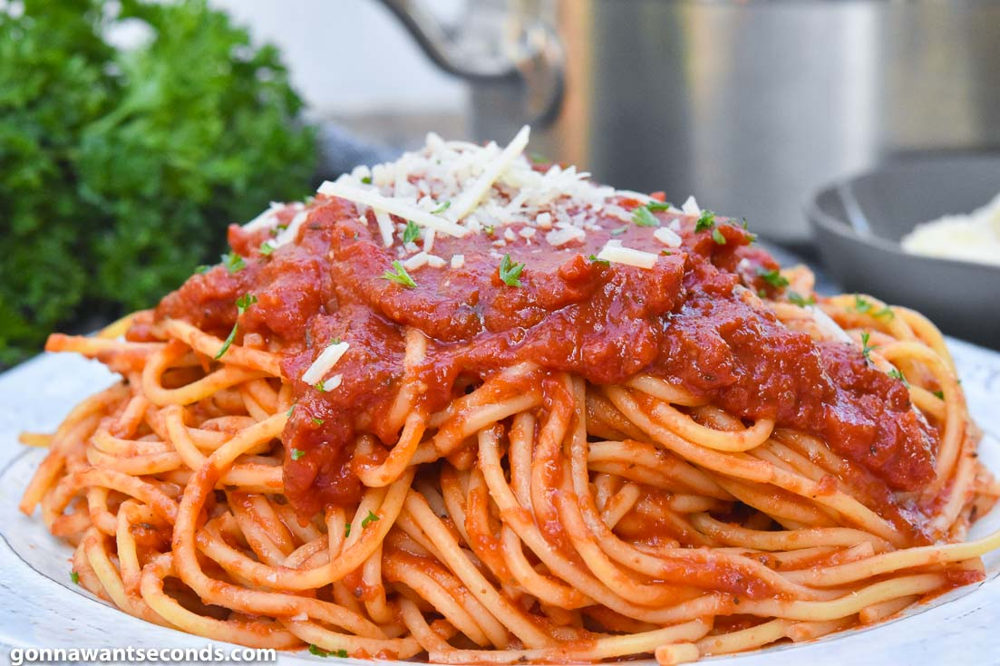

Italian Spaghetti

Ingredients
- 2 (28-ounce) cans crushed tomatoes
- 1 (12-ounce) can tomato paste
- 1 cup water
- 1/4 cup grated onion
- 1 tablespoon garlic, minced
- 1/2 teaspoon salt
- 1/2 teaspoon black pepper
- 1 tablespoon brown sugar, packed
- 1 tablespoon Italian seasoning
- 2 teaspoons dried rosemary
- 1 bay leaf
- 1 cup grated Parmesan cheese
- 16 ounces spaghetti
- 2 tablespoon parsley, chopped
Directions:
- In a large pot, stir together the crushed tomatoes, tomato paste, 1 cup water, onion, garlic, salt, black pepper, brown sugar, Italian seasoning, rosemary, bay leaf, and grated Parmesan cheese. Bring to a boil. Reduce heat and simmer, uncovered, stirring occasionally for 2 hours.
- Cook the spaghetti according to package instructions just to al dente. Drain well, reserving 1 cup of pasta water, and return to the pasta pot. While spaghetti is still hot, add 1/2 the sauce and toss to coat
- Add more sauce as desired. If the sauce is too thick, thin with reserved pasta water. Turn pasta out onto a large serving platter, sprinkle with parsley and serve.